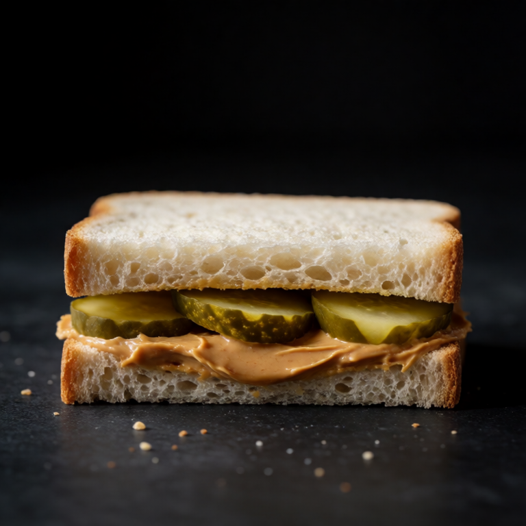
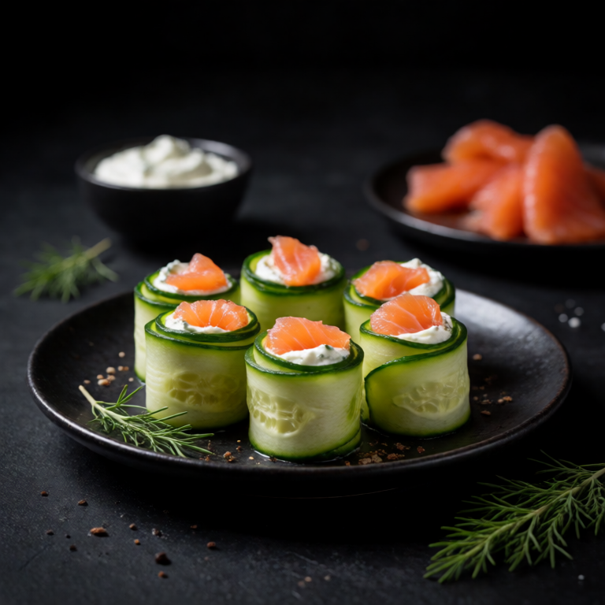
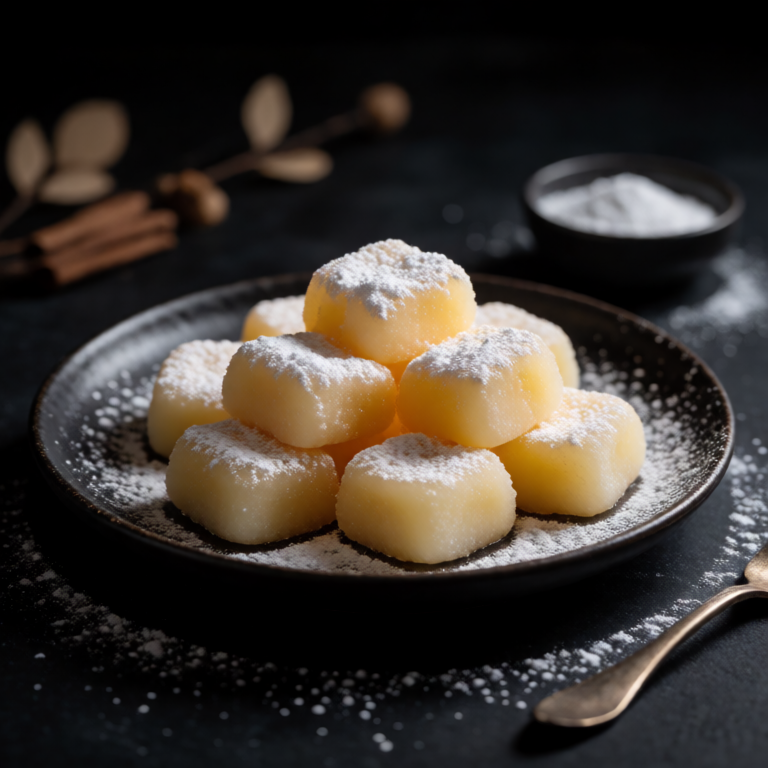

Today’s slop / 1333 min
Peanut Butter and Pickle Sandwich
The viral sweet, salty, and sour sandwich. Do not knock it until you try it.
New slop tomorrow.One approachable recipe every day. Feeding yourself without turning it into a project.

The viral sweet, salty, and sour sandwich. Do not knock it until you try it.
New slop tomorrow.
Smoked Salmon and Cream Cheese Cucumber Rolls
Sep 9, 2026 / 10 min / Snack
Butter Mochi Bites
Sep 8, 2026 / 5 min / SnackMochi and Matcha Tea
Sep 7, 2026 / 5 min / Snack
Antipasto Skewers
Sep 6, 2026 / 10 min / Snack
Zucchini Noodles with Pesto
Sep 5, 2026 / 10 min / Pasta
Quesadilla with Sweet Potato and Black Beans
Sep 4, 2026 / 15 min / MainChoose the constraint, craving, or level of refusal currently running dinner.
The most popular choice becomes Friday's recipe.
Voting closes Thursday, September 10 at 6 PM ET.Submissions are moderated. Publication permission is requested in the form. See Tally privacy details.

Fresh blistered tomato sauce with torn mozzarella that melts into hot pasta. Summer simplicity.
Reopen this fileTwilight. Nana. The Sims. Gossip Girl. Stardew Valley. The aisle is clearly labeled.
usernamesThe Anatomy of a Foidslop Usernamebunni. kitty. fae. mochi. rottingangel. wiredprincess. You know the account before you click it.
languageWhy Is Everything Slop Now?Add a noun to slop and there is a good chance everyone already understands what you mean.
A daily recipe publication for one person and whatever kind of night this is.
Follow the daily slop via RSS